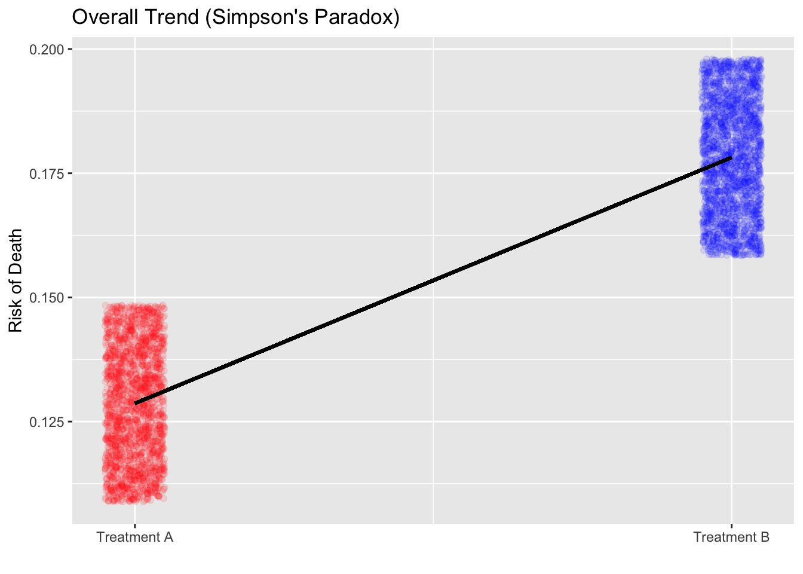
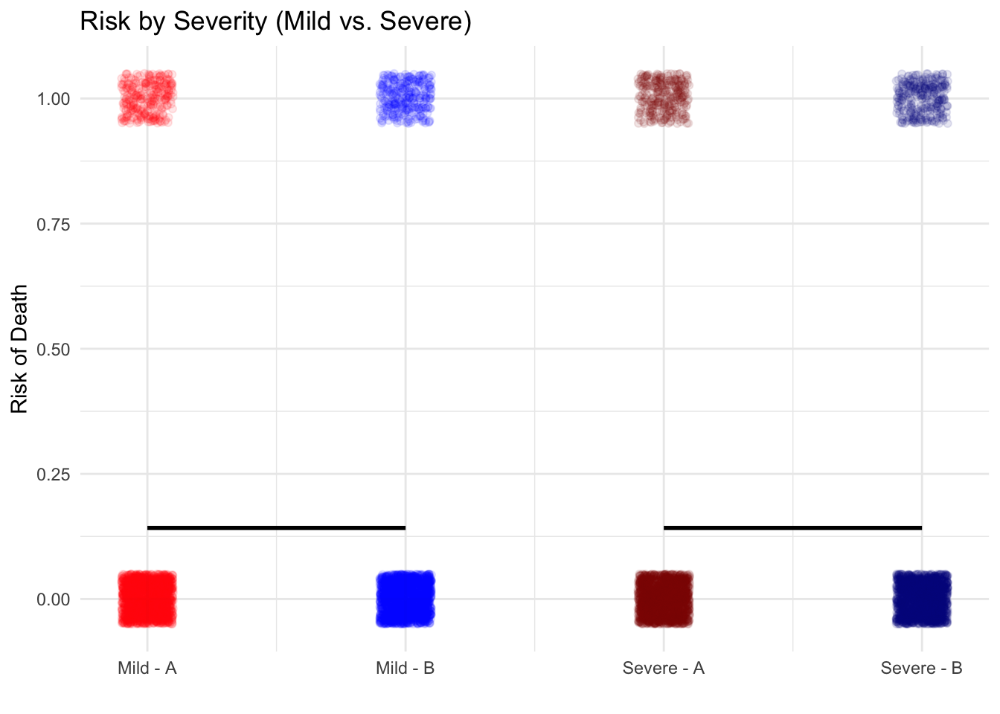

1 Foundations of Causal Thinking in Public Health
Class materials
Slides: Module 1
Recording: Module 1, Part 1.1
Recording: Module 1, Part 2.1
Recording: Module 1, Part 2.2
Textbook reading
Supplementary reading
Pearl, J. and Mackenzie, D. (2018) The Book of Why: The New Science of Cause and Effect. Basic Books. Selected public health news articles (provided on the course site).
Topics covered
- Association vs. Causation
- Introduction to Counterfactuals and Potential Outcomes
- Causal Estimands and Identification
- Critical reading exercise: analyzing causal claims in public health news
1.1 Association vs. Causation
Association refers to a statistical relationship where two variables move together, but one doesn’t necessarily cause the other. For instance, ice cream sales and drowning incidents both rise in the summer, not because one causes the other, but because they share a third factor: temperature. In contrast, causation implies a direct cause-and-effect relationship, where changing one variable leads to changes in another. Establishing causation requires rigorous methods, such as randomized controlled trials, to rule out confounding factors.
Simpson’s Paradox occurs when a trend appears in separate groups but reverses when the data are combined. This paradox is driven by confounding variables—unaccounted factors that influence both the treatment and the outcome. It illustrates how aggregated data can be misleading and emphasizes the importance of analyzing relationships within subgroups to avoid drawing incorrect conclusions.
To demonstrate this paradox, I simulated a study comparing two pneumonia treatments across 2,000 people Treatment A was mostly given to mild cases, while Treatment B was given to severe cases. When data were analyzed without considering severity, Treatment A seemed more effective. However, when stratified by severity, Treatment B consistently showed lower death rates in both mild and severe groups. This was visualized through two plots: one showing the misleading overall trend, and another stratified by severity revealing the true relationship.
# library(ggplot2)
# library(dplyr)
set.seed(123)
n <- 2050
severity <- rep(c("Mild", "Severe"), times = c(1450, 600))
treatment <- c(rep("Treatment A", 1400), rep("Treatment B", 50),
rep("Treatment A", 100), rep("Treatment B", 500))
outcome <- c(rbinom(1400, 1, 0.15), # Mild + A (15% death rate)
rbinom(50, 1, 0.10), # Mild + B (10% death rate)
rbinom(100, 1, 0.30), # Severe + A (30% death rate)
rbinom(500, 1, 0.20)) # Severe + B (20% death rate)
df <- data.frame(
Severity = severity,
Treatment = treatment,
Outcome = outcome
)
death_counts <- tapply(df$Outcome, list(df$Severity, df$Treatment), sum)
table_counts <- table(df$Severity, df$Treatment)
death_rates <- round(death_counts / table_counts, 3)
overall_a <- sum(df$Outcome[df$Treatment == "Treatment A"]) / sum(df$Treatment == "Treatment A")
overall_b <- sum(df$Outcome[df$Treatment == "Treatment B"]) / sum(df$Treatment == "Treatment B")
print("Death rates by severity and treatment:")## [1] "Death rates by severity and treatment:"## Treatment A Treatment B
## Mild 0.136 0.120
## Severe 0.380 0.204## Overall death rate (Treatment A): 0.153## Overall death rate (Treatment B): 0.196overall_plot_data <- data.frame(
X_Pos = c(1, 2),
Death_rate = c(overall_a, overall_b),
Treatment = c("Treatment A", "Treatment B")
)
p1 <- ggplot(overall_plot_data, aes(x = X_Pos, y = Death_rate, color = Treatment)) +
geom_point(size = 5) +
geom_line(aes(group = 1), color = "black", linewidth = 1.2) +
scale_x_continuous(breaks = c(1, 2), labels = c("Treatment A", "Treatment B")) +
scale_color_manual(values = c("Treatment A" = "red", "Treatment B" = "blue")) +
labs(title = "Overall Trend (Simpson's Paradox)", x = "", y = "Risk of Death") +
theme_minimal() +
guides(color = "none")
print(p1)
group_means <- df %>%
group_by(Severity, Treatment) %>%
summarize(Death_rate = mean(Outcome), .groups = "drop") %>%
mutate(X_Pos = case_when(
Severity == "Mild" & Treatment == "Treatment A" ~ 1,
Severity == "Mild" & Treatment == "Treatment B" ~ 2,
Severity == "Severe" & Treatment == "Treatment A" ~ 3,
Severity == "Severe" & Treatment == "Treatment B" ~ 4
),
Group = paste(Severity, "-", Treatment),
Treatment_Color = Treatment
)
p2 <- ggplot(group_means, aes(x = X_Pos, y = Death_rate, color = Treatment_Color)) +
geom_point(size = 5) +
geom_line(aes(group = Severity), color = "black", linewidth = 1.2) +
scale_x_continuous(
breaks = 1:4,
labels = c("Mild - A", "Mild - B", "Severe - A", "Severe - B")
) +
scale_color_manual(
values = c("Treatment A" = "red", "Treatment B" = "blue"),
name = "Treatment"
) +
labs(title = "Risk by Severity (Mild vs. Severe)", y = "Risk of Death", x = "") +
theme_minimal()
print(p2)
1.2 Introduction to Counterfactuals and Potential Outcomes
At the heart of causal inference lies a simple yet powerful idea: counterfactuals — what would have happened if something else had occurred. However, we can never observe both outcomes for the same person. This is known as the Fundamental Problem of Causal Inference. We only observe the outcome under the condition that actually occurred — everything else is unobserved, or counterfactual.
Building on the concept of counterfactuals, the Average Treatment Effect (ATE) provides a formal way to quantify the impact of a treatment or intervention across a population. Since we cannot observe both potential outcomes (treated and untreated) for the same individual, ATE instead compares the average outcome we would see if everyone received the treatment versus if no one did. Mathematically, it is the difference between the expected value of the potential outcome under treatment and the expected value under control. While individual causal effects remain unobservable, the ATE offers a population-level summary of the treatment’s impact — a cornerstone of policy evaluation, randomized experiments, and observational causal analysis.
n <- 2000
age <- rnorm(n, mean = 50, sd = 10)
bmi <- rnorm(n, mean = 25, sd = 4)
cholesterol <- rnorm(n, mean = 200, sd = 30)
treatment <- rbinom(n, 1, plogis(0.05 * age + 0.01 * cholesterol - 2))
y_0 <- 140 - 0.5 * age + 0.3 * bmi + 0.2 * cholesterol + rnorm(n, sd = 5)
y_1 <- y_0 - (40 + 1.0 * age - 0.3 * cholesterol) + rnorm(n, sd = 1.5)
y <- ifelse(treatment == 1, y_1, y_0)
true_ate <- mean(y_1 - y_0)
cat("True ATE:", round(true_ate, 3), "\n")## True ATE: -30.026df <- data.frame(age, bmi, cholesterol, treatment, y)
naive_ate <- mean(df$y[df$treatment == 1]) - mean(df$y[df$treatment == 0])
cat("Naive (unadjusted) ATE estimate:", round(naive_ate, 3), "\n")## Naive (unadjusted) ATE estimate: -31.2461.3 Causal Estimands and Identification
Causal estimands are the quantities we aim to estimate to understand the effect of a treatment or intervention. The most common estimands include:
- Average Treatment Effect (ATE): Measures the average difference in outcomes if everyone received the treatment versus if no one did.
- Average Treatment Effect on the Treated (ATT): Measures the effect of treatment for those who actually received the treatment.
- Average Treatment Effect on the Controls (ATC): Measures the effect for those who did not receive the treatment.
- Conditional Average Treatment Effect (CATE): Measures the treatment effect for subgroups defined by observed characteristics (e.g., older vs. younger patients).
Identification is the process of linking a causal estimand (like ATE) to observable data. Without valid identification, any estimates we produce may be biased or incorrect. One major challenge in causal inference is that we can never observe both potential outcomes for the same person — only the outcome under the actual treatment they received. This is the Fundamental Problem of Causal Inference.